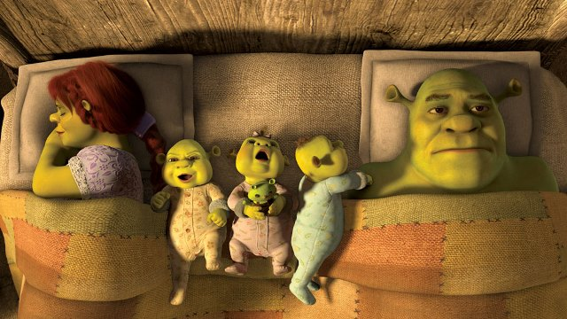

Hi, I’m Shrek, and this is my page! I hope you like it. Here, you can learn all about me.

About me
I’m not your run-of-the-mill ogre – I’m a Marmite ogre: you either love me, or you’re scared to death at the mere idea that I live in a swamp half a mile from the village.
I hang around with an unusual crowd. There’s my lovely wife, Princess Fiona; my noble steed, Donkey; my musketeer, Puss in Boots (as seen on his own film!); Dragon; Pinocchio; the Gingerbread Man (aka Gingie); and many others.
I'm no messenger boy, but I used to be a delivery boy for the late Lord Farquaad (men if his stature are in short supply). For a spell, I was Duloc’s reigning champion pro-wrestler, though I prefer to settle my quarrels over a pint.
I like my privacy, though I’m always up for a karaoke dance party!
Favourite food
I’m something of a gourmet. Not only am I like an onion, but I also love onions! Here are some of my favourite foods:
- Shrekfast: Jelly squeezed from eyes (actually, it’s quite good on toast)
- Shrunch: Stewed rodent (I make a mean weed-rat stew)
- Shrinner: Lord Farquaad’s wedding cake
- Shressert: Spider’s web candyfloss
Favourite songs
You may be surprised, given my distaste for singing donkeys, that I am a bit of a music aficionado.
My favourite songs, in descending order of preference, are:
- Just the Way You Are – Billy Joel
- Dance to the Music – Sly and the Family Stone
- I’m a Believer – The Monkees
- Like a Virgin – Madonna
- I’m On My Way – The Proclaimers
- Sandstorm – Darude